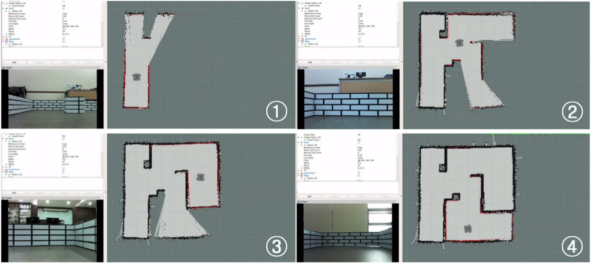
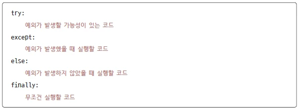
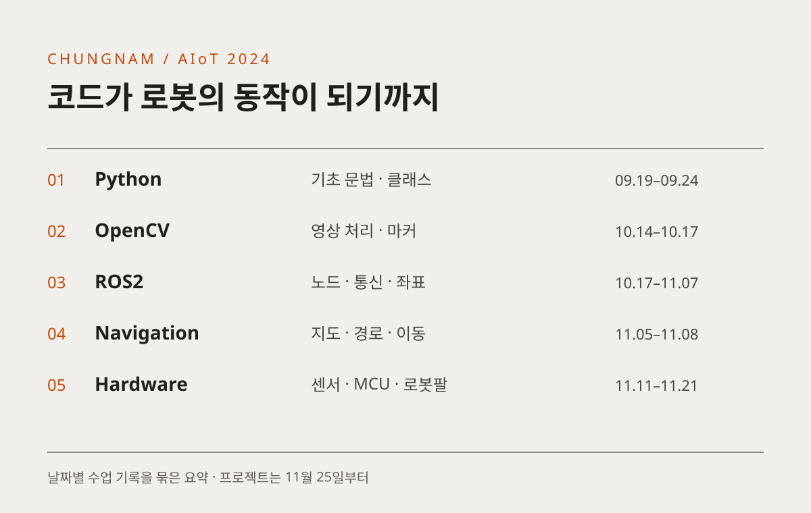
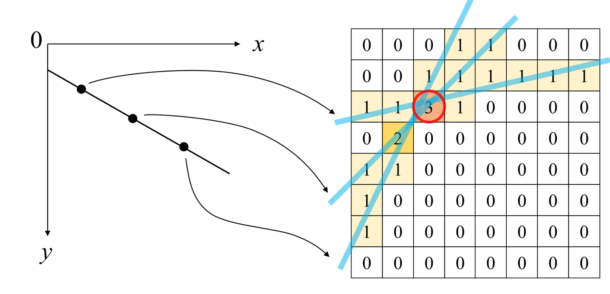
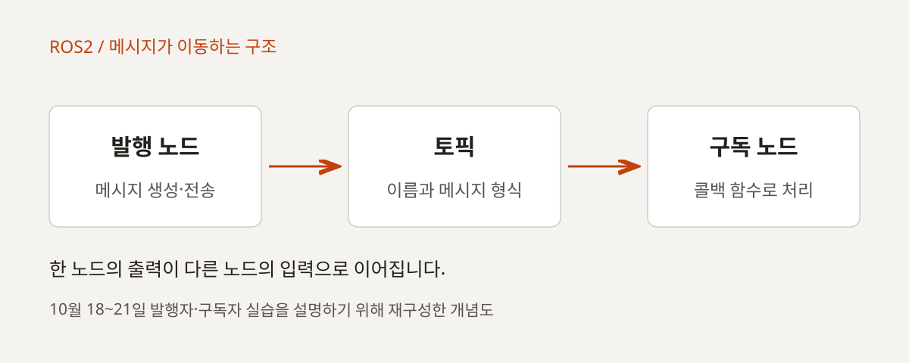
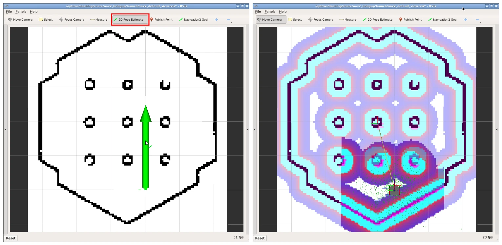
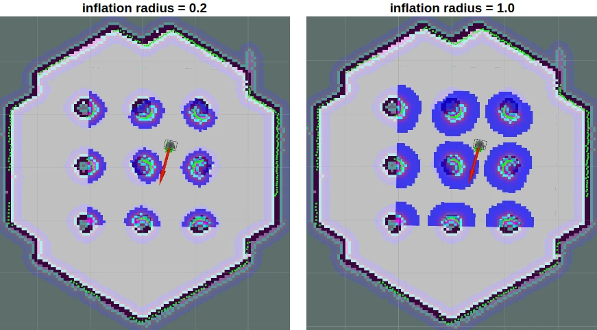
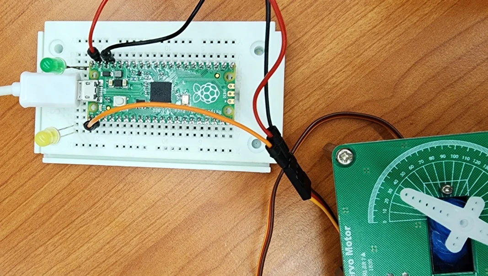
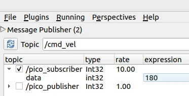
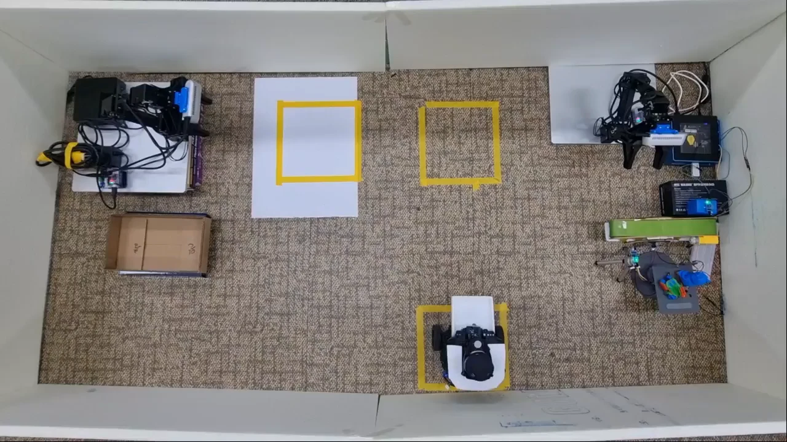

OFFLINE EDUCATION / CHUNGNAM 2024
코드를 배우고,
로봇의 동작으로 잇다
2024년 충남인력개발원 AIoT 자율로봇개발 과정의 수업 기록. Python과 OpenCV를 바탕으로 ROS2 통신, TurtleBot3 주행, 주변 장치와 로봇팔 실습으로 이어진 학습 흐름을 소개합니다.
기초 문법에서
센서와 동작의 연결까지
함수와 클래스를 익힌 다음, 영상을 읽고 노드 사이에 데이터를 전달합니다. 같은 통신 구조를 이동 로봇과 작은 제어 보드에 적용하며 배운 개념의 쓰임을 넓혔습니다. 날짜별 수업 기록과 실제 예제 코드를 따라 교육의 흐름을 정리했습니다.

크게 보기 ↗SLAM 교안의 네 단계 예시입니다. 이동한 영역이 지도에 누적되는 모습을 보여 줍니다. 교안 설명용 화면으로, 해당 수업 현장을 촬영한 사진은 아닙니다.
출처 · 교안_ROS2 터틀봇_바인드소프트_7_슬램네비게이션.pptx · 4쪽 ↗- 전체 과정 계획
- 2024년 7월 16일~12월 19일
학습계획서에 기재된 기간 - 이번 글의 수업 범위
- 9월 19일~11월 22일 기록
11월 25일부터 팀 프로젝트 - 담당 역할
- 관련 교과 강의 · 최수길
교육생 프로젝트 지도
2024 / 09.19–09.24
Python으로 로봇 코드를 읽을 준비
처음에는 로봇 명령보다 코드의 구조를 익혔습니다. 9월 19일 기록은 Python 설치와 개발 환경, 변수·자료형·문자열·조건문으로 시작합니다. 다음 수업에서는 리스트와 딕셔너리, 반복문, 함수와 예외 처리를 다루며 입력을 받고 데이터를 가공하는 기본 흐름을 만들었습니다.
클래스와 메서드, dataclass, 상속, 모듈과 패키지까지 이어지는 구성은 이후 ROS2 노드를 읽고 작성하는 바탕이 됩니다. 단일 스크립트를 실행하는 경험에서 객체와 패키지 단위로 코드를 구성하는 경험으로 확장했습니다.

크게 보기 ↗try·except·else·finally의 역할을 설명한 Python 교안입니다. 함수와 예외 처리 실습에서 코드의 실행 흐름을 함께 살폈습니다.
출처 · 파이썬_06_01.pptx · 19쪽 ↗
크게 보기 ↗날짜별 수업 기록을 재구성한 기존 요약도입니다.
- 값과 자료형
- 반복·함수·예외
- 클래스와 객체
- 모듈·패키지
수업에서 다룬 연결
ROS2 Python 노드도 클래스를 만들고 콜백 함수를 등록하는 구조를 사용합니다. 앞서 배운 함수와 객체 개념을 뒤의 통신 실습에서 다시 만나도록 연결했습니다.
기록으로 남은 실습
저장소에는 기초 문법부터 함수, 예외, 클래스 예제가 남아 있습니다. 예제 파일의 존재와 날짜별 수업 기록을 함께 기준으로 삼았습니다.
2024 / 10.14–10.17
카메라의 픽셀에서 필요한 정보 찾기
10월 14일부터는 Python과 C++ 환경에서 OpenCV를 다뤘습니다. 이미지와 동영상을 읽고 출력한 뒤 밝기·대비, 블러, 투시 변환, 에지와 직선 검출로 확장했습니다. 같은 영상도 어떤 처리를 거치느냐에 따라 필요한 정보가 달라지는 과정을 실습했습니다.
색상 범위와 이진화, 모폴로지 연산에 이어 템플릿 매칭, QR 코드와 ArUco 마커를 다뤘습니다. 필기체 숫자를 분류하는 KNN·CNN 실습도 기록되어 있습니다. 이 단계의 영상 처리는 이후 로봇 카메라의 이미지 토픽과 마커 인식을 이해하는 토대가 됩니다.

크게 보기 ↗OpenCV 교안의 허프 변환 설명도입니다. 영상의 점이 어떤 직선에 속하는지 후보를 누적하는 과정을 보여 줍니다.
출처 · Open_cv_09_에지검출과 응용.pptx · 11쪽 ↗- 이미지·영상 입력
- 밝기·필터·변환
- 색상·에지·형태 추출
- 마커·숫자 인식
수업에서 다룬 연결
계획서에는 YOLO를 포함한 교육안도 있지만, 이번 글은 실제 날짜별 기록이 확인되는 OpenCV와 마커·숫자 인식 실습을 중심으로 소개합니다.
기록으로 남은 실습
C++와 Python의 코드 구조 차이를 비교하고, QR 코드 예제의 링크 오류와 같은 개발 환경 문제도 수업 기록에 남겼습니다.
2024 / 10.17–11.07
작은 노드를 연결해 시스템 구성하기
10월 17일에는 ROS2 개념과 설치, 명령줄 도구, rqt를 살핀 뒤 패키지와 노드를 작성했습니다. Python과 C++로 발행자·구독자를 만들고, 토픽·서비스·액션의 차이를 코드로 다루는 과정으로 이어졌습니다.
사용자 정의 메시지, 비동기 서비스 호출, Fibonacci 액션, 파라미터와 launch 파일을 차례로 연결했습니다. 여러 노드를 함께 실행하면서 데이터가 어디에서 만들어지고 어디로 전달되는지, 실행 설정은 어떻게 관리하는지 살폈습니다. 이후에는 QoS, 로깅, 컴포넌트와 lifecycle, tf2까지 범위를 넓혔습니다.

크게 보기 ↗원본 수업 기록과 발행·구독 예제를 바탕으로 재구성한 개념도입니다. 실제 실행 화면과 구분해 설명합니다.
출처 · README 2024-10-18~21 및 simple_ros 예제 ↗- 노드·토픽 작성
- 서비스·액션 연결
- 파라미터·launch 관리
- QoS·tf2 실습
수업에서 다룬 연결
통신 문법만 따로 익히는 데서 그치지 않고 turtlesim 제어와 계산기 패키지에 적용했습니다. Python 노드와 C++ 노드를 함께 실행하는 구성도 기록되어 있습니다.
기록으로 남은 실습
같은 기능을 두 언어로 작성하고, 비동기 호출과 좌표 변환을 실습했습니다. 수업 기록에 남은 오류 해결은 당시 실습 맥락으로 다루며 현재 환경용 설치 지침으로 옮기지 않습니다.
2024 / 10.28–11.08
화면 속 노드를 실제 주행으로 이어 보기
TurtleBot3를 연결한 뒤에는 속도 명령과 오도메트리로 원과 사각형 주행을 다뤘습니다. Gazebo와 RViz에서 움직임과 좌표를 확인하고, 라이다 데이터를 활용하는 벽 따라가기 실습으로 확장했습니다. 센서가 읽은 거리와 로봇이 내보내는 이동 명령 사이의 관계를 코드로 확인하는 단계입니다.
11월 7~8일 기록에는 지도 메시지 분석, Cartographer 지도 작성과 저장, Navigation2 이동이 이어집니다. 저장된 지도를 사용하는 방식과 웨이포인트 순회 코드도 다뤘습니다. 시뮬레이션으로 확인한 뒤 기체에 적용하는 장면이 기록되어 있어 두 환경을 오가며 실습한 흐름을 볼 수 있습니다.

크게 보기 ↗내비게이션 교안의 지도·비용지도 예시입니다. 단순한 공간 지도 위에 장애물 주변을 고려하는 정보가 더해집니다.
출처 · 교안_ROS2 터틀봇_바인드소프트_7_슬램네비게이션.pptx · 7쪽 ↗
크게 보기 ↗같은 교안에서 inflation radius를 비교한 그림입니다. 설정에 따라 장애물 주변의 비용 영역이 달라지는 개념을 설명합니다.
출처 · 교안_ROS2 터틀봇_바인드소프트_7_슬램네비게이션.pptx · 9쪽 ↗- 속도 명령·오도메트리
- 라이다로 벽 따라가기
- 지도 작성·저장
- 목적지·웨이포인트 이동
수업에서 다룬 연결
라이다 값이 0으로 들어오는 경우를 처리하고, 좌표와 노드 상태를 확인하며 이동 기능을 연결했습니다. 주행 결과뿐 아니라 센서 데이터와 실행 상태를 읽는 과정도 수업의 일부였습니다.
기록으로 남은 실습
follow_wall, follow_waypoints, follow_waypoints_loop 코드가 남아 있습니다. 이 글은 교육 기록을 소개하며 주행 정확도나 산업 현장 운용 성능을 측정한 결과를 제시하지 않습니다.
2024 / 11.11–11.21
카메라와 주변 장치로 확장하기
11월 중순에는 로봇 카메라와 ArUco 마커, LED·서보모터·스위치·LCD 같은 주변 장치를 연결했습니다. 카메라 이미지 토픽을 처리하고, 마커의 좌표와 로봇의 좌표를 맞추며, Arduino와의 시리얼 통신을 ROS2 노드로 다루는 실습입니다.
OpenMANIPULATOR 조립과 원격 조작, MoveIt2 실습에 이어 Raspberry Pi Pico와 micro-ROS를 사용한 발행·구독·서비스 및 모터 제어도 기록되어 있습니다. 로봇의 바퀴를 움직이는 일에서 주변 장치와 로봇팔, 작은 제어 보드를 함께 다루는 방향으로 확장했습니다.

크게 보기 ↗micro-ROS 서보 교안의 원본 사진입니다. 작은 제어 보드의 출력이 모터 움직임으로 이어지는 하드웨어 구성을 보여 줍니다.
출처 · 교안_ROS2 터틀봇_바인드소프트_10_microros_pico_servo.pptx · 2쪽 ↗
크게 보기 ↗같은 교안의 토픽 발행 화면입니다. 값을 바꾸어 보내고 서보 동작을 확인하는 실습 흐름을 설명합니다.
출처 · 교안_ROS2 터틀봇_바인드소프트_10_microros_pico_servo.pptx · 9쪽 ↗- 카메라·마커 좌표
- Arduino·주변 장치
- 로봇팔·MoveIt2
- Pico·micro-ROS
수업에서 다룬 연결
서보 동작과 좌표 발행을 연결하고, 장치의 입력과 출력을 토픽·서비스로 다뤘습니다. 서로 다른 하드웨어를 ROS2의 통신 구조 안에 연결하는 경험입니다.
기록으로 남은 실습
마커의 optical 좌표와 URDF 수정, GPIO 라이브러리와 실행 환경 문제를 다음 수업에서 다시 다룬 기록이 남아 있습니다. 설치와 오류 해결에 쓴 시간도 실제 교육 과정에 포함됩니다.
2024 / 11.22–11.25
배운 기능을 팀의 문제로 가져가기
11월 22일에는 DDS 설정과 학습 체크리스트, 프로젝트 안내를 진행했습니다. 11월 25일 기록부터는 팀 저장소를 만들고 프로젝트를 시작합니다. 앞에서 익힌 통신·영상 처리·주행·장치 제어를 각 팀의 문제에 맞게 골라 결합하는 단계입니다.
교육 내용과 교육생의 결과물은 별도 글로 나누었습니다. 충남 AIoT 세 팀 프로젝트 글에서는 물류, 구조, 로봇 협업을 주제로 한 기획과 구현 과정을 원본 발표·결과 자료와 함께 볼 수 있습니다.

크게 보기 ↗교육생 1조 최종 발표자료의 물류 자동화 장치입니다. 앞의 교안 예시와 구분되는 팀 프로젝트 결과이며, 세 팀의 개발 과정은 별도 글에서 소개합니다.
출처 · 자율로봇개발 1조 최종프로젝트.pptx ↗수업 기록과 코드로 확인하는 교육
전체 과정의 계획기간은 학습계획서에 기재된 2024년 7월 16일~12월 19일입니다. 이 글에서 다룬 범위는 저장소에 남아 있는 9월 19일~11월 22일 수업 기록이며, 전체 기간의 모든 수업을 의미하지 않습니다. 학습계획서에 최수길 담당으로 기재된 관련 교과와 날짜별 기록을 함께 확인했습니다.
당시 바인드소프트 소속으로 진행한 교육 기록입니다. 공개 예제의 링크는 확인 당시 커밋으로 고정했습니다. 교육생 프로젝트의 기획과 구현은 각 팀의 작업으로 구분해 별도 글에 소개합니다.